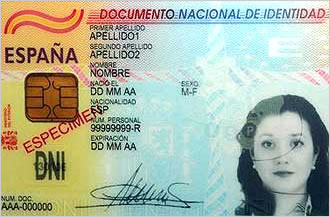

La ventanilla administrativa vía web
Gestiones a distancia
La posibilidad de realizar gestiones online con la administracion local o la administración general ya es posible gracias a servicios de gestión virtual.
- Ventajas. Evitamos tener que acercarnos físicamente a las ofinas de la administración, ganando mucho tiempo en el proceso.
- Desventajas. Altunas operaciones son mucho más complicadas de realizar que otras.
Veamos un compedio de los principales tramites que podemos realizar.
Proceso de acreditación
Todos los trámite que vamos a realizar implican una operación personal (de mayor o menor relevancia), y por tanto, debe haber un proceso de validación de usuario.
- Validación sencilla. Se utiliza para aquellos trámites de poca relevancia, nos solicitan información personal para proporcionarnos la respuesta que buscamos.
- Validación con DNI electrónico. Es el proceso de validación más complejo, utilizado en aquellas operaciones que requieran el máximo nivel de seguridad.
DNI electrónico

DNI con soporte de firma/identidad digital a través de un chip inteligente totalmete seguro. Mediante esta tarjeta y un lector conectado al ordenador podemos realizar todo tipo de trámites con plena validez jurídica.
- Complejo. Es necesario un ordenador con un lector adecuado, y recordar una contraseña de alta seguridad para poder realizar los trámites.
- Seguro y útil. Se pueden realizar los trámites más avanzados con el DNI-electrónico, y la seguridad que proporciona su uso es muy alta.
Trámites sencillos
Vamos a ver un buen número de trámites que podemos realizar con la administración.
- Tráfico. Consulta de puntos del carnet, pagar multa.
- Ayuntamiento de Castellón. Registro, pago de recibos de contribución.
- Seguridad social. Tarjeta sanitaria europea.
- GVA. Cita médica.
- Ministerio del interior. Cita para renovación del DNI.
- Hacienda. Consultar/confirmar el borrador (renta).
- Diputación. Pagar impuestos, hacer reclamaciones.
Dirección General de Tráfico
Veamos como primer ejemplo cómo acceder a consultar o tramitar alguna operación con Tráfico.
- Web. http://www.dgt.es
- Consulta de puntos. Número de puntos que tenemos asociados a nuestro carnet de conducir.
- Requisitos Únicamente deberemos disponer de nuestro carnet de conducir actual, ya que nos pedirán datos relacionados con él.
- Ejemplo. Mira las imágenes de la diapositiva siguiente para ver el proceso.


Cambia de foto con las teclas: ↑ y ↓
Renovación del DNI/Pasaporte
Veamos ahora como solicitar hora para renovar el DNI o pasaporte.
- Web. http://www.citapreviadnie.es
- Fácil. Es de las operaciones más sencillas, sólamente deberemos disponer de nuestro actual DNI para solicitar hora.
- Ejemplo. Mira las pantallas de la diapositiva siguiente para ver cómo se realiza el trámite.

Cambia de foto con las teclas: ↑ y ↓
Tarjeta Sanitaria Europea
Otro trámite interesante vía web es la solicitud de la Tarjeta Sanitaria Europea para cuando nos vamos de viaje al extranjero.
- Web. http://www.seg-social.es
- Fácil. Es de las operaciones más sencillas, sólamente deberemos disponer de nuestro actual DNI para solicitar hora.
- Ejemplo. Mira las pantallas de la diapositiva siguiente para ver cómo se realiza el trámite.

Cambia de foto con las teclas: ↑ y ↓
Declaración de la renta
También podemos realizar el trámite de la declaración de la renta mediante Internet. Es un poco más complicado que los procesos anteriores pero perfectamente factible.
- Web. http://www.aeat.es
- Validación. Para validar nuestros datos nos piden el código que nos han enviado por SMS (si ya la realizamos el año anterior), la casilla 620 de la declaración del año anterior, o el DNI electrónico.
- Ejemplo. Mira las pantallas de las diapositivas siguientes para ver cómo se realiza el trámite.
Cambia de foto con las teclas: ↑ y ↓
Petición de cita en el médico de cabecera
Por último, veamos cómo solicitar una cita al médico/a de cabecera a través de la web. Este proceso es bastante sencillo.
- Web. http://www.gva.es
- Apartado Cita médica.
- Validación. Simplemente deberemos poner nuestro número de SIP y la fecha de nacimiento.
- Ejemplo. Mira las pantallas de las diapositivas siguientes para ver cómo se realiza el trámite.
Cambia de foto con las teclas: ↑ y ↓